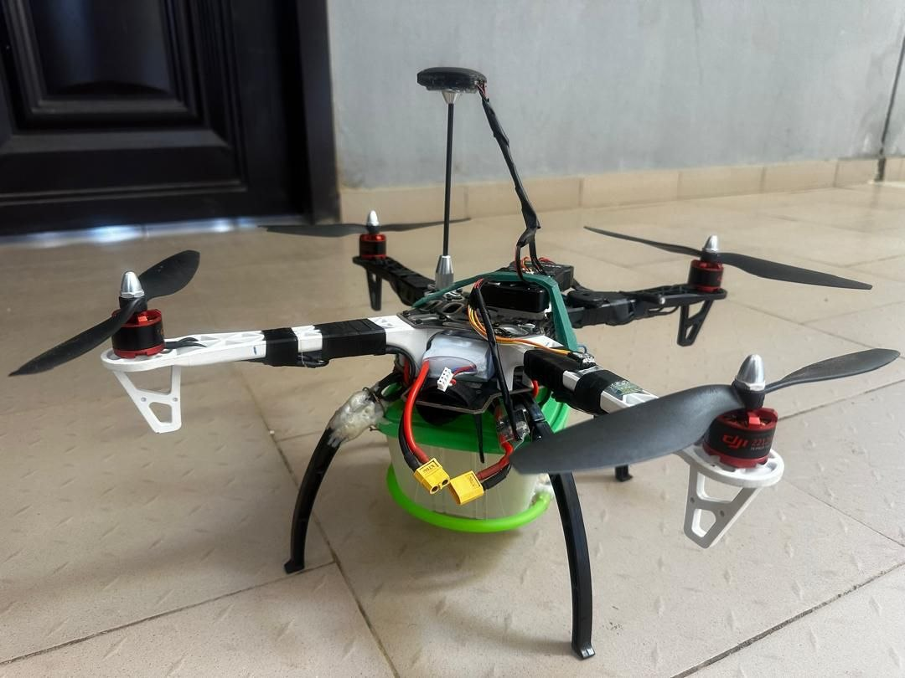

🛠 MAKING
Building Beyond the Assignment
Coursework gives me a reason to build, but most of what I build — the drone, the ESP32 sensor rigs, one-off PCB jobs — keeps going long after the grade is in. It's the part of engineering that's just play.